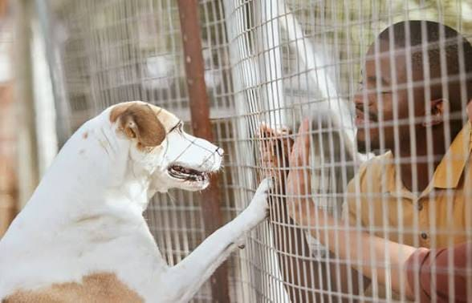
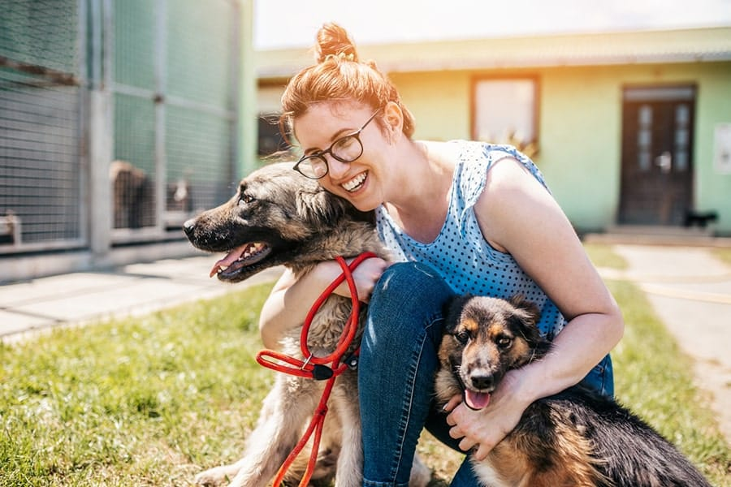

About Paw Shelter
Founded in 2020 in Durban, KZN. We saw many street dogs and cats suffering without food, shelter or care, so we started Paw Shelter to give them a safe place to heal and thrive.
Today, we rescue, rehabilitate and rehome pets while helping the community understand the importance of compassion and responsible animal care.
Our Story
Founded in 2020 in Durban, KZN. I saw many street dogs suffering with no home, no food. So I started Paw Shelter from my own yard with 3 dogs.
Today we have rescued over 500 dogs and cats. We give them food, medical care and love until they find new homes.

Vision, Mission and Values
What keeps us going every day.
Vision
To be the leading sanctuary in SA where no animal is left behind.
Mission
To rescue, heal and rehome pets through safe shelter and vet care.
Values
Love, care, respect for every animal. No animal is turned away.
Our Team
We are volunteers from Durban who work daily to clean, feed and care for the animals from 07:00 to 18:00.
We also work with local vets for vaccination and sterilization.

Why We Started
- Too many street dogs in KZN
- No shelter nearby was open daily
- We wanted a place where people can visit and adopt easily
- We sell clothing merch to raise money for food